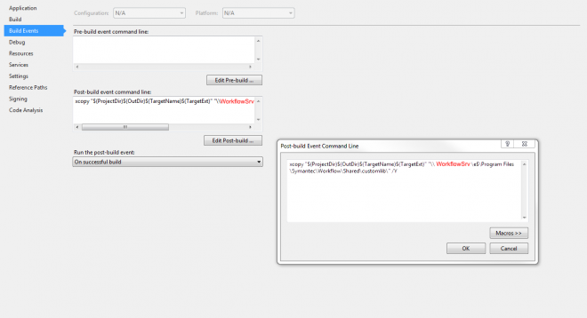

In this Article I'm going to explain how to create a simple component to Concatenate two strings.
Table of Contents
- List
- Setup
- Simple Component (this)
- Deploy
- Help File
- Logging
- Inputs
- Inspecting other Components
- Creating Globals
- Creating Project Properties
- Working with SQL
- Working with a Web Service
If you haven't already setup the basic project using the previous article.
As we have the bare bones configured we now need to start writing some code.
The goal of this component to to concatenate (+) two strings so we need an output variable of the result.
private string _variableName;
[Editor(typeof(VariableTypeEditor), typeof(UITypeEditor))]
[VariableType(typeof(string), false, true)]
[StringNotEmptyRule]
public string VariableName {
get {
return this._variableName;
}
set {
this._variableName = value;
this.IsValid(true);
}
}
Let's break this down into smaller chunks and explain what each one is doing.
[Editor(typeof(VariableTypeEditor), typeof(UITypeEditor))]
We need to tell Workflow how are are going to access the variable.
We want a picker to either choose a string in the process to overwrite, or create a new one.
Next define the Type of the object, in this case a string.
[VariableType(typeof(string), false, true)]
We wish for the value not to be empty so add the following attribute:
[StringNotEmptyRule]
Now add the usual getter and setter methods.
That's the output, now let's configure the input, we need two more strings to append together:
private VariableOrValueDataType _string1 = new VariableOrValueDataType(typeof(string));
[VariableType(typeof(string), false),
PropertyIndex(3),
DisplayName("String 1"),
Category("Configuration"),
ComponentDescription("The first String to be merged")]
public VariableOrValueDataType String1 {
get {
return _string1 ?? (_string1 = new VariableOrValueDataType(typeof(string)));
}
set {
_string1 = value;
}
}
This way has a couple of differences, with added properties that are used in the component help.
We have
- DisplayName
- Category
- ComponentDescription
- PropertyIndex
Repeat this for String2
We now have all the variable we require, let's use them in the component.
Let's look at the ReadFromStream first.
info is a variable you name, so keep it consistent throughout your components.
We want to grab these values from whatever the User has set in WF.
public override void ReadFromStream(ObjectReadStream info) {
base.ReadFromStream(info);
_variableName = info.GetString("_variableName");
_string1 = (VariableOrValueDataType)info.GetValue("_string1", typeof(VariableOrValueDataType));
_string2 = (VariableOrValueDataType)info.GetValue("_string2", typeof(VariableOrValueDataType));
}
Now WriteFromStream:
public override void WriteToStream(ObjectWriteStream info) {
base.WriteToStream(info);
info.AddValue("_variableName", _variableName);
info.AddValue("_string1", _string1);
info.AddValue("_string2", _string2);
}
To use this data within WF add need to add the following:
public DataDefinition[] GetAddedData() {
if (string.IsNullOrEmpty(this.VariableName))
return (DataDefinition[])null;
return new DataDefinition[1]
{
new DataDefinition(this.VariableName, typeof (string), false)
};
}
This is needed for when you right click in the process and "Browse Data".
Now if you want to add some nice to have warning messages the following method is required, RunValidation:
// Show an icon telling you need to add data
protected override InvalidReason[] RunValidation() {
var invalid = new InvalidReasonsList();
if (!String1.IsFilledIn()) invalid.Add(new InvalidReason((IValid)this, "String1 is Required.", BreakLevel.Fatal, new[] { "String1" }));
if (!String2.IsFilledIn()) invalid.Add(new InvalidReason((IValid)this, "String2 is Required.", BreakLevel.Fatal, new[] { "String2" }));
return invalid.GetInvalidReasons();
}
Different Levels will show different symbols in WF.
BreakLevel
- Warning (0)
- Fatal (1)
The message will be shown beneath the component variable.
Finally with all this configured we can get the actual Run method that performs the action we wish the component to do.
public override void Run(IData data)
{
data[_variableName] = _string1.GetValue<String>(data) + " " + _string2.GetValue<String>(data);
}
The .GetValue<> can retrieve a number of Types depending on what you declared your variables as.
Build your component.
Check the output path
E:\WF\Protirus.Components.Concat\Protirus.Components.Concat\bin\Debug\Protirus.Components.Concat.dll
Copy the dll and add it to a folder on your WF Server.
You could create a Build Event that copies the output to the WF Server.

xcopy "$(ProjectDir)$(OutDir)$(TargetName)$(TargetExt)" "\\WORKFLOWSERVER\e$\Program Files\Symantec\Workflow\Shared\customlib\" /Y
This can run into problems once the WF is published as the DLL is in use so the /Y flag can't overwrite the file.
See the Deploy guide next for other methods.